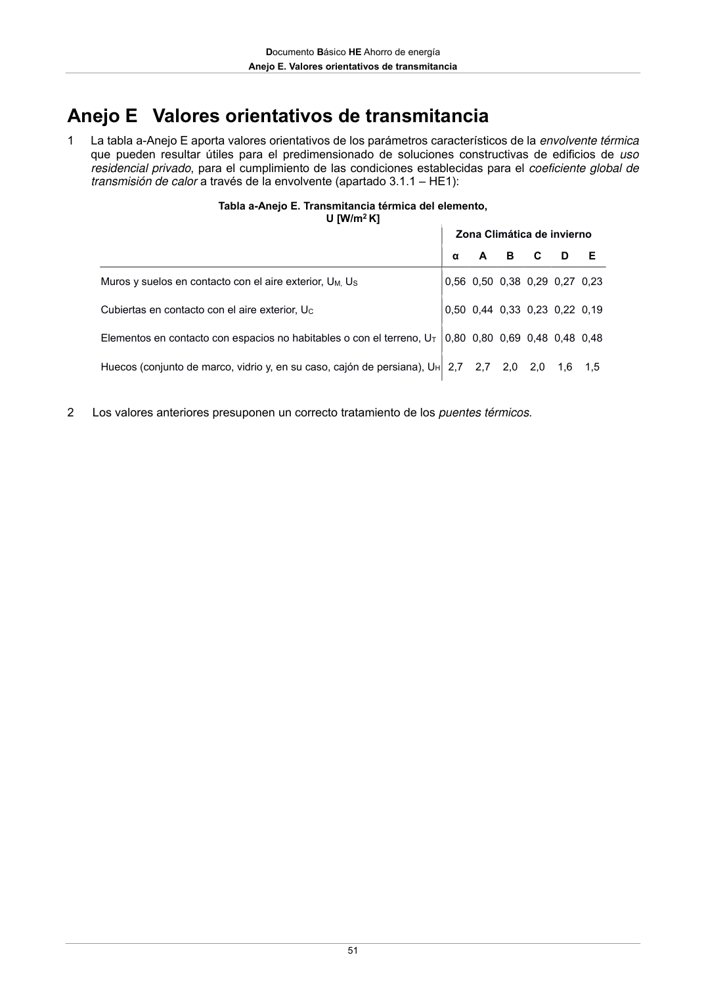

DB-HE Ahorro de energía · edición 2022-06-14 · capa oficial
Documento DB-HE-oficial · SHA-256 del PDF 7f890bd495552e979f83f72c5f5c7b642e745911a8e343a7b5b73023ce0e1f05
Copia fiel del PDF fuente · Fuente oficial
Ficha de la disposición en la fuente oficial
Formatos: JSON del segmento · Markdown
Anejo E. Valores orientativos de transmitancia 51 Anejo E Valores orientativos de transmitancia 1 La tabla a-Anejo E aporta valores orientativos de los parámetros característicos de la envolvente térmica que pueden resultar útiles para el predimensionado de soluciones constructivas de edificios de uso residencial privado, para el cumplimiento de las condiciones establecidas para el coeficiente global de transmisión de calor a través de la envolvente (apartado 3.1.1 – HE1): Tabla a-Anejo E. Transmitancia térmica del elemento, U [W/m2 K] Zona Climática de invierno α A B C D E Muros y suelos en contacto con el aire exterior, UM, US 0,560,500,38 0,29 0,27 0,23 Cubiertas en contacto con el aire exterior, UC 0,500,440,33 0,23 0,22 0,19 Elementos en contacto con espacios no habitables o con el terreno, UT 0,800,800,69 0,48 0,48 0,48 Huecos (conjunto de marco, vidrio y, en su caso, cajón de persiana), UH2,7 2,7 2,0 2,0 1,6 1,5 2 Los valores anteriores presuponen un correcto tratamiento de los puentes térmicos. Documento Básico HE Ahorro de energía
